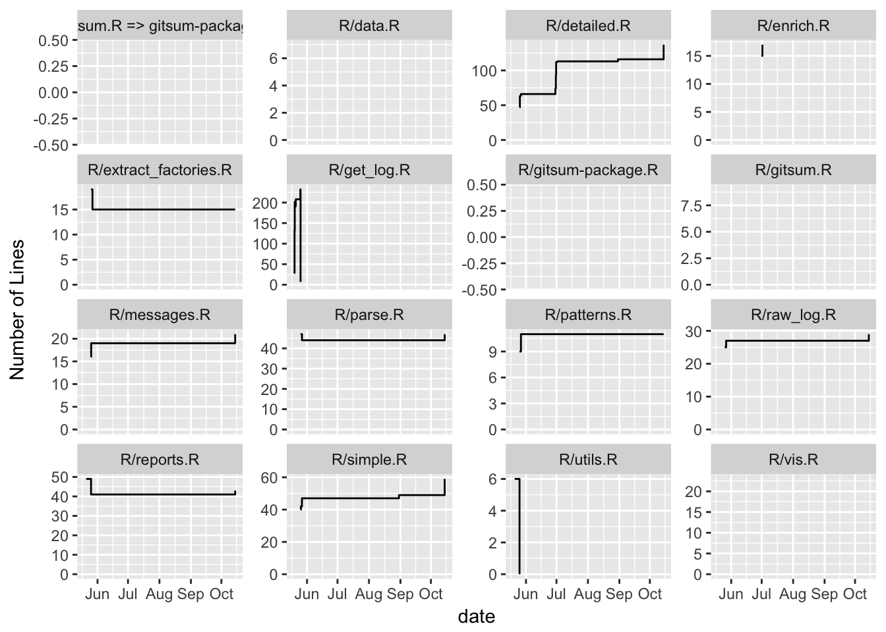
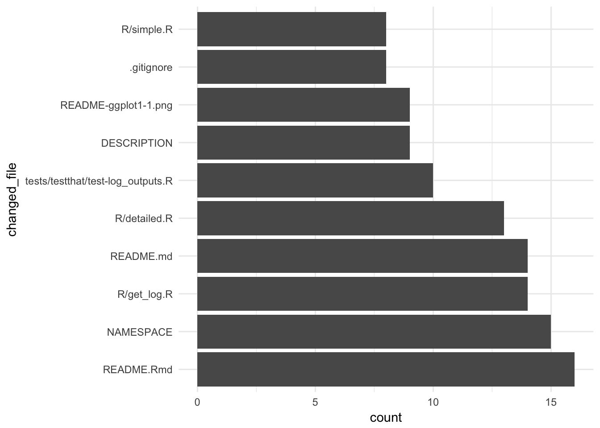
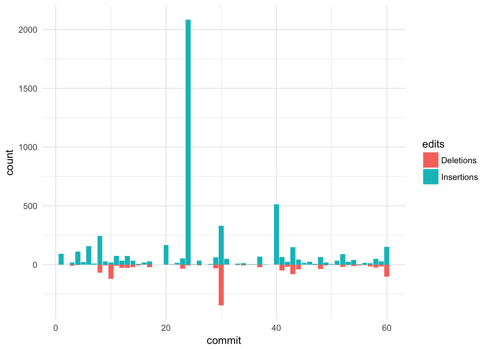

Package is work in progress! If you encounter errors / problems, please file an issue or make a PR.


Introduction
This package parses a git repository history to collect comprehensive information about the activity in the repo. The parsed data is made available to the user in a tabular format. The package can also generate reports based on the parse data.
There are two main functions for parsing the history, both return tabular data:
-
parse_log_simple()is a relatively fast parser and returns a tibble with one commit per row. There is no file-specific information. -
parse_log_detailed()outputs a nested tibble and for each commit, the names of the amended files, number of lines changed ect. available. This function is slower.
report_git() creates a html, pdf, or word report with the parsed log data according to a template. Templates can be created by the user or a template from the gitsum package can be used.
Let’s see the package in action.
library("gitsum")
library("tidyverse")
library("forcats")We can obtain a parsed log like this:
tbl <- parse_log_detailed() %>%
arrange(date) %>%
select(short_hash, short_message, total_files_changed, nested)
tbl
#> # A tibble: 101 x 4
#> short_hash short_message total_files_changed nested
#> <chr> <chr> <dbl> <list>
#> 1 243f initial commit 7 <tibble [7 x 5]>
#> 2 f8ee add log example data 1 <tibble [1 x 5]>
#> 3 6328 add parents 3 <tibble [3 x 5]>
#> 4 dfab intermediate 1 <tibble [1 x 5]>
#> 5 7825 add licence 1 <tibble [1 x 5]>
#> 6 2ac3 add readme 2 <tibble [2 x 5]>
#> 7 7a2a document log data 1 <tibble [1 x 5]>
#> 8 943c add helpfiles 10 <tibble [10 x 5]>
#> 9 917e update infrastructur 3 <tibble [3 x 5]>
#> 10 4fc0 remove garbage 6 <tibble [6 x 5]>
#> # ... with 91 more rowsSince we used parse_log_detailed(), there is detailed file-specific information available for every commit:
tbl$nested[[3]]
#> # A tibble: 3 x 5
#> changed_file edits insertions deletions is_exact
#> <chr> <dbl> <dbl> <dbl> <lgl>
#> 1 DESCRIPTION 6 5 1 TRUE
#> 2 NAMESPACE 3 2 1 TRUE
#> 3 R/get_log.R 19 11 8 TRUESince the data has such a high resolution, various graphs, tables etc. can be produced from it to provide insights into the git history.
Examples
Since the output of git_log_detailed() is a nested tibble, you can work on it as you work on any other tibble. Let us first have a look at who comitted to this repository:
log <- parse_log_detailed()
log %>%
group_by(author_name) %>%
summarize(n = n())
#> # A tibble: 3 x 2
#> author_name n
#> <chr> <int>
#> 1 Jon Calder 2
#> 2 jonmcalder 6
#> 3 Lorenz Walthert 93We can also investigate how the number of lines of each file in the R directory evolved.
lines <- log %>%
add_line_history()
r_files <- grep("^R/", lines$changed_file, value = TRUE)
to_plot <- lines %>%
filter(changed_file %in% r_files)
ggplot(to_plot, aes(x = date, y = current_lines)) +
geom_step() +
scale_y_continuous(name = "Number of Lines", limits = c(0, NA)) +
facet_wrap(~changed_file, scales = "free_y")
Next, we want to see which files were contained in most commits:
log %>%
unnest(nested) %>% # unnest the tibble
mutate(changed_file = fct_lump(fct_infreq(changed_file), n = 10)) %>%
filter(changed_file != "Other") %>%
ggplot(aes(x = changed_file)) + geom_bar() + coord_flip() +
theme_minimal()
We can also easily get a visual overview of the number of insertions & deletions in commits over time:
commit.dat <- data.frame(
edits = rep(c("Insertions", "Deletions"), each = nrow(log)),
commit = rep(1:nrow(log), 2),
count = c(log$total_insertions, -log$total_deletions))
ggplot(commit.dat, aes(x = commit, y = count, fill = edits)) +
geom_bar(stat = "identity", position = "identity") +
theme_minimal()
Or the number of commits broken down by day of the week:
log %>%
mutate(weekday = factor(weekday, c("Mon", "Tue", "Wed", "Thu", "Fri", "Sat", "Sun"))) %>%
ggplot(aes(x = weekday)) + geom_bar() +
theme_minimal()